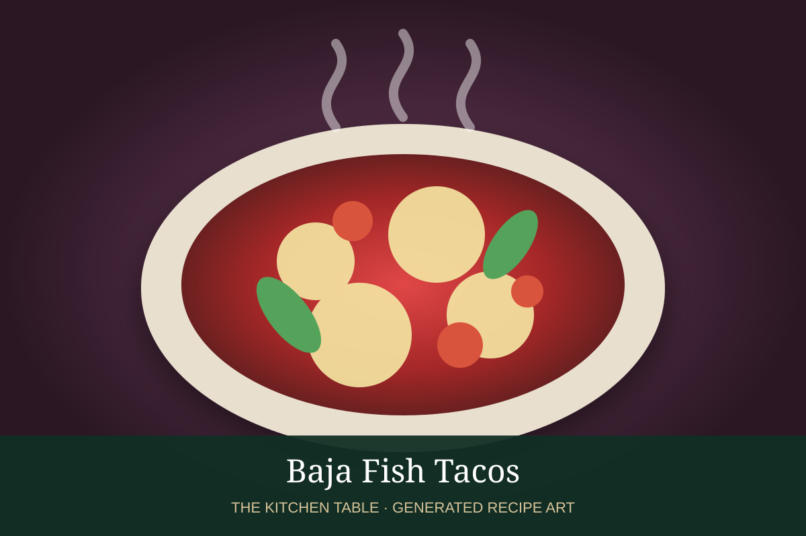

← Back to all recipes
SEAFOOD · MEXICAN
Baja Fish Tacos
Crisp beer-battered fish tacos with shredded cabbage, lime crema, pico de gallo, and salsa.
45 minMakes 10 tacos

Photo: Muy Delish
Ingredients
- 1 1/2 lb firm white fish, cut into strips
- 1 cup all-purpose flour
- 1/2 cup cornstarch
- 1 tsp baking powder
- 1 tsp chili powder
- 1 tsp kosher salt
- 1 cup cold Mexican lager or sparkling water
- Neutral oil, for frying
- 10 corn tortillas
- Shredded cabbage
- Lime crema
- Pico de gallo
- Lime wedges
Preparation
- Pat fish very dry and season lightly.
- Whisk flour, cornstarch, baking powder, chili powder, and salt. Add cold beer just before frying to make a thin batter.
- Heat oil to 350°F.
- Dip fish in batter and fry in batches until crisp and cooked through, about 3 to 4 minutes.
- Drain briefly and serve in warm tortillas with cabbage, lime crema, pico de gallo, and lime.